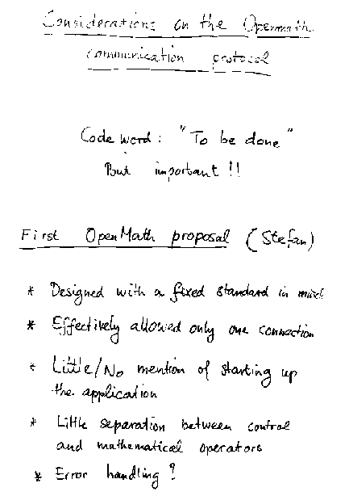
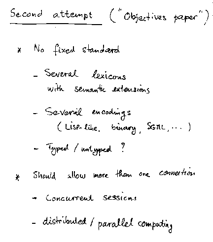
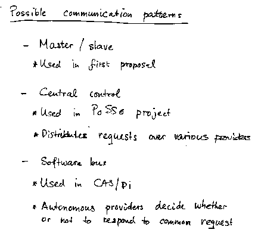
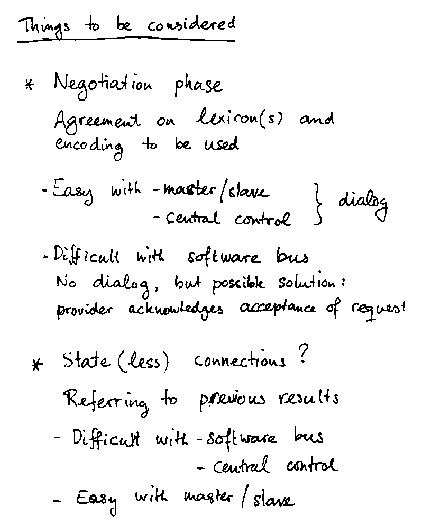
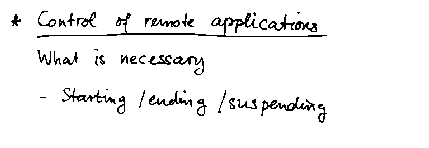

M. Roelofs, A. van Leeuwen: Considerations for the communication protocol proper
Slides presented at OpenMath Workshop 3 by Marcel Roelofs/Andre van Leeuwen.

(full size, 13k)
(original, 17k)

(full size, 11k)
(original, 12k)

(full size, 11k)
(original, 12k)

(full size, 16k)
(original, 17k)

(full size, 4k)
(original, 6k)
This page is part of the OpenMath Web archive,
and is no longer kept up to date.